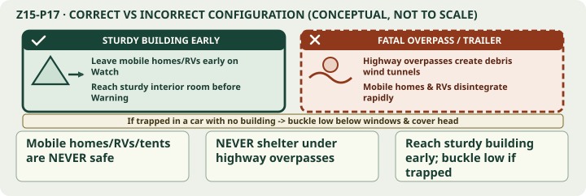

Z15-P17 · Disaster scenarios · New manuscript
Avoid mobile homes, vehicles, and highway overpasses during tornadoes
Prevent the highest-fatality tornado mistakes by leaving fragile structures early and rejecting deadly overpass shelter myths.
When it applies · Manufactured/mobile homes, RVs, campgrounds, and motorists encountering Tornado Watches or Warnings.
Equipment · Pre-identified nearby sturdy community storm shelter, vehicle keys ready on Watch days, and NOAA/WEA alerts.

Actions
- Understand that mobile homes, manufactured homes, RVs, tents, and campers are NEVER safe during a tornado—even anchored units roll and disintegrate rapidly; identify a sturdy nearby community shelter or friend's basement BEFORE storm season and move there early on Tornado Watch/approaching-storm alerts.[D03, E17]
- NEVER shelter under a highway overpass or bridge—overpasses create violent wind-tunnel acceleration, offer zero protection from horizontal flying debris, and block highway lanes so trailing vehicles crash or get trapped.[D03, E17]
- If caught inside a vehicle with a tornado visibly approaching and NO sturdy building reachable: either drive smoothly at right angles away from the tornado path if traffic/roads allow, OR pull safely off the road, stay buckled inside the vehicle with head below window level covered by coats/arms, or lie flat in a low ditch ONLY if well lower than the road and free of flash-flood water (protecting head/neck).[D03, E17]
Failure recognition · Parking under an interstate overpass during a Tornado Warning, creating a deadly traffic jam inside a high-speed debris wind tunnel.[D03, E17]
Verify · Confirm mobile-home/camper residents have a pre-arranged sturdy shelter plan and every driver rejects highway overpasses categorically.[D03, E17]
Stop or change course · Do not attempt to outrun a rain-wrapped tornado across congested city streets or flooded rural roads—pull into the nearest sturdy interior building early.[D03, D05]
Evidence and editorial notes
- D03 · FEMA / Ready.gov · Tornadoes (current web edition)
- Section: Tornadoes > Watch vs Warning, Safe Room Selection, and Post-Storm Hazards · Conditions: Developing supercells, Tornado Watches, and Tornado Warnings
Support: Act immediately on a Tornado Warning by moving to a FEMA safe room, storm shelter, basement, or lowest-level small interior room away from windows; protect head/neck from flying debris, never shelter in vehicles/mobile homes or under overpasses, and watch for downed power lines and gas leaks afterward.
Limitations: Outdoor sirens are designed to alert people outdoors and may be inaudible inside insulated homes during storms. · Conflicting evidence: None; aligns with E17 and NWS-TORNADO.
Editorial note: Core tornado shelter-selection and post-storm hazard evidence in Z15. · Specialist reviewer: Meteorology and emergency management
Primary source · checked 2026-11-24 - D05 · FEMA / Ready.gov · Floods (current web edition)
- Section: Floods > Flash Flood Evacuation, Turn Around Don't Drown, and Re-Entry · Conditions: River flooding, urban flash flooding, dam/levee risk, and post-flood return
Support: Evacuate early when ordered, move to higher ground immediately on Flash Flood Warnings, never walk or drive through floodwater (6 inches knocks down adults; 12 inches carries most cars), and never enter flood-damaged homes until electrical, gas, and structural hazards are cleared.
Limitations: Floodwaters commonly contain raw sewage, fuel, submerged debris, and energized downed wiring. · Conflicting evidence: None; aligns with T07, T16, and N10.
Editorial note: Core flood evacuation, water-avoidance, and safe re-entry evidence. · Specialist reviewer: Emergency management and flood hydrology
Primary source · checked 2026-11-24 - E17 · NWS · Tornado Safety (current web edition)
- Section: Tornado Safety > Staying Safe During a Tornado · Conditions: Tornado warning in camp, vehicle, or building
Support: Move to an interior lower-level room of a sturdy building if reachable; tents, mobile structures, and highway overpasses are unsafe; if caught outdoors with no sturdy shelter, monitor alerts early and follow NWS last-resort guidance.
Limitations: No outdoor improvised shelter is tornado-safe. · Conflicting evidence: None; reinforces early forecast withdrawal before severe storms arrive.
Editorial note: Establishes severe-storm abandonment threshold for camp shelters. · Specialist reviewer: Emergency management and meteorology
Primary source · checked 2026-11-24
Source lineage · NWS Tornado Safety and Ready.gov Tornadoes; new manuscript · Classification · New manuscript.